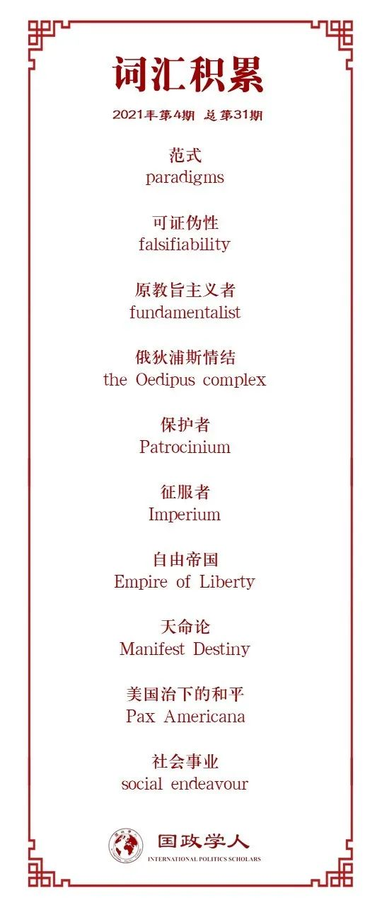

收录于合集

作品简介
【作者】Matthew Johnson，英国兰开斯特大学政治、哲学和宗教学系高级讲师；Russell Foster，伦敦国王学院欧洲与国际研究系讲师。
【编译】赵雷（山东大学公共管理学院硕士研究生）
【校对】张彦赪（悉尼大学国际关系专业）
【审核】何伊楠
【排版】林祉欣
【美编】马颖
【来源】Johnson, M., & Foster, R. (2021). Which ideas should guide US Foreign Policy? Holding fundamentalist policy paradigms to account. International Politics (Hague, Netherlands), 58(1), 111–130.
【归档】《国政关系前沿》2021年第4期，总第31期。
期刊简介
International Politics是一本具有开拓性的学术期刊，致力于探讨跨国问题和全球问题。期刊研究问题包括俄罗斯与西方关系、中国和平崛起的机会、正义战争的概念、古巴后卡斯特罗时代的前景、美国衰落的可能性等等。2018年影响因子0.693。
美国的外交政策应该以何种理念为指导?对原教旨主义的政策范式问责
Which ideas should guide US Foreign Policy? Holding fundamentalist policy paradigms to account
Matthew Johnson
Russell Foster
内容提要
本文作者观察到，虽然近年来美国乃至世界发生了一系列“地震式”的重大事件，深远地影响了美国未来的命运，但新保守主义与新自由主义思想家们却拒绝修正自己的立场。这两种思想范式（paradigms）在美国扩张崛起的过程中孕育并不断发展，深远地影响着美国外交政策。在学术层面上，两种范式声称自己是科学的理论，致力于解决现实问题。然而，在现实层面上，两种范式不仅在解释问题上捉襟见肘，其顽固性还在一定程度上导致了美国如今所面临的困窘。作者借此从“科学性”角度重新审视了思想范式和外交政策间的关系。基于科学哲学家们对“科学性”的讨论，作者的分析认为，政治学中的思想范式大多数缺乏“可证伪性”（‘falsifiability’），思想范式的支持者们拒绝提出证伪的标准，也拒绝从内部挑战范式。因此，与其说是科学，不如说是一种伪科学式的信仰。作者建议，学术界各种思想范式的支持者们必须为自己创造或支持的“科学理论”提供证伪标准，而政策制定者们对于范式应持审慎态度，拒绝成为原教旨主义者（fundamentalist）。
文章导读
在本文的第一部分，作者借助科学哲学的观点阐述了“思想”和“可证伪性”的重要性。
首先，思想范式为国家的关键决策者们提供信息，从而产生政策影响。例如，20世纪70年代，新自由主义萌生并被一些经济学家所拥护，美国、英国领导人率先根据其理论制定政策，随后逐步扩散向国际组织中。正因思想范式寻求在政策圈的影响力，所以有理由向思想范式的科学性进行问责——这些范式究竟在多大程度上准确反应了人类社会中正在发生的事？又在多大程度上提供了增进人类利益的方法？
其次，作者将“可证伪性”作为问责范式的方法。对“科学”的定义，在哲学上分为两个派别：其一是传统的经验主义者（empiricists）的定义，“科学”是通过观察归纳规律的方法，以反映独立于人之外的客观存在。而另一派以波普尔（Popper）为代表的理性主义者（rationalists）则认为，事实永远无法从观察者运行的理论框架中被客观地抽象出来，从方法论层面而言，“科学”不在于经验观察，而是在“批判性思维”（‘critical thinking’）中，基于对逻辑一致性和可证伪性的先验承诺而建立理论。因此，一个不能被任何可以想象的事件驳斥的理论是不科学的。库恩（Kuhn）则进一步超越了波普尔的观点，认为科学本身是基于一种文化和历史背景的建构，其方法是最近的，与特定的社会事业（social endeavour）相关。所谓客观真理只是我们目前所拥有的关于如何解释正在发生的事情的最佳想法。库恩认为，科学不仅被定义为对真理的信仰，还把解决谜题作为一种目标，科学的进步在于这些谜题能够被解决的程度，而非在本体论上，理论中提出的本质实体和现实存在间的本体论的匹配度。从这一定义出发，库恩认为范式本质上缺乏内部批评。当设定了要解决的问题，各种形而上学的、方法论的和实践的范式之间的缺陷、不一致或异常变得不可调和时，新的范式就应运而生。然而，由于范式建立在对无基础事件的基本主观观点上，因此不可能有理性主义的排序，也不可能有经验主义对真理的验证。在这方面，参与每种范式的学术界都是不可通约的（incommensurable）、不相容的（incompatible）和非累积的（non- cumulative），因而缺乏共同的原则、前提或真理基础，来衡量他们的成功。
作者以弗洛伊德（Freud）的理论来类比政治范式。在方法论上，弗洛伊德持有经验主义的信念，相信真理，相信有经验的人能够客观地感知和理解自己的情绪，并通过讨论和观察对心理刺激的反应，准确地感知和解释他人的思想和情绪。弗洛伊德提出了“俄狄浦斯情结”（the Oedipus complex），将童年的发展作为成年期明显不相关的行为和心理活动的原因。波普尔认为，这种理论缺乏证伪的标准，因为俄狄浦斯的概念本身是“不可检验的、不可驳倒的”。没有任何可以想象的人类行为可以与该理论相矛盾。然而，经验和逻辑上的缺陷并不一定会削弱精神分析学解决谜题的努力。如果理论解决了自我建构的难题，并且在内部被认为是正确的，在库恩看来，它们就构成了一个不可通约的科学范式。政治范式中也存在“俄狄浦斯”似的概念，不可证伪使得范式的支持者可以避免被反驳。文章指出不可证伪是原教旨主义的标志，政治范式尤其当涉及外交政策领域时，需要以特定的方式塑造人类，从而使范式“开出”的处方普遍生效。当面对挑战时，原教旨主义者不是修改教义，而是希望推动范式被更纯粹地运用来解决问题——即并非是范式不奏效，而是当前的世界没有完美而纯粹地契合范式。
在本文的第二部分，作者分析了新保守主义和新自由主义的内涵，并指出了它们的不可证伪性。
首先，新保守主义和新自由主义的共同点在于，将美国当作是一种具有进一步扩张的手段和动机的力量。这个共识的根源在于美国根深蒂固的“帝国”（‘empire’）观念。在早期，“帝国”一词缺乏剥削的负面含义，而是与“权力”、“主权”同义，导致美国立国之时即反“殖民”但不反“帝国”。因此，帝国不被视为民主和自由的诅咒，而是这些理想得以维持的伙伴和载体。美国和罗马在历史上，同样都通过共和制国家的扩张推翻君主政体，因此常常被相提并论。两者在帝国性质上的类比在当代美国被过度使用。在《联邦党人文集》和《反联邦党人文集》中，美国的立国思想被罗马的经验所主导，罗马文明对美国自我的政治认知产生了重大影响，然而这种影响，并非基于罗马文明在现实中是什么样，而是基于对其的幻想。同样是共和制国家的扩张，罗马被视为文明的仁慈保护者（patrocinium），而非征服者（imperium）。这种将帝国视为守护者而非征服者的想象，早在独立之前就为新生的美国的自我描述蒙上了一层长长的阴影，并在独立后变本加厉。而后，杰弗逊的“自由帝国”（‘Empire of Liberty’）将政治手段与哲学目的区分开来，支持了美国在欧洲大陆扩张的“天命论” （‘Manifest Destiny’）。
出于对杰斐逊自由帝国的关注，新保守主义者主张美国民主独特的、跨历史的价值，以及在一个颠覆性的、敌对的世界中通过硬实力和扩张来维护民主的需要。新保守主义者保罗·沃尔福威茨（Paul Wolfowitz）等，相信美国需要单方面维护“美国治下的和平”（Pax Americana）:“摧毁怪物是建立美国帝国的先决条件，而美国帝国是建立自由帝国的先决条件”。然而奉行新保守主义的布什政府造成了伊拉克战争的失败，美国动用硬实力推翻暴君，实行代议制民主。其结果是建立了一个被宗派冲突撕裂的政治体系，并削弱了美国的主导地位和单极局势，硬实力的扩张反而造成了新保守主义声称要解决的问题。然而，沃尔福威茨等人可以辩称，失败是由于硬实力部署不足（而非过度），这一事实体现了对该范式进行证伪的困难性。这种范式在这方面的确难以捉摸，因为它在解释自身基本价值承诺上，是不透明且无实质意义的。此外，它也缺乏对民主的组成特征及其与其他人类利益的关系的实质性审查。同样，新保守主义者通过断言在专制条件下产生的偏好不符合真实或客观的利益来避免证伪。当代中东的混乱并没有动摇一些新保守主义者的信念，这一事实表明，这种做法会带来军事灾难的危险。
新保守主义的重点是通过硬实力扩张促进民主，而新自由主义关注的是软实力，强调美国文化霸权的重要性和资本对美国利益的价值。自由主义及其通过市场合作和相互依赖的能力，赋予了美国文化独特的、超越历史的价值，因为它能够将截然不同的个人吸引到一个单一的社会领域。新自由主义者声称，自由贸易在其主体国家的“文化输出”（‘cultural export’）使美国能够渗透到曾经孤立的社会。资本主义使美国风格的商品和媒体得以被大规模消费，通过其商品在日益全球化的文化市场上的优越性，吸引那些在非正式帝国的人走向美国及其自由主义。美国发达的消费社会确保了经济、人民和文化在赞助人和客户的关系中变得相互交织和相互依赖，而不是征服者和臣民。对于新自由主义者来说，美国的软实力是一股强大的外交政策力量，正是因为它不是通过武力传播——它具有吸引力，因而它被视为在促进民主、人权和开放市场方面发挥关键作用，因为吸引人们走向民主比强迫他们走向民主更容易。针对美国的衰落和自由国际秩序的失效，新自由主义者主张调整目前的制度框架，而不是摒弃自己的范式。约瑟夫·奈（Joseph Nye）辩称，单凭经济实力不应该被用来作为评估美国世界地位的手段，他认为其他国家天生没有能力在全球层面上挑战美国，在软实力霸权上永远没有国家可以与华盛顿平等。
新自由主义认为，应对危机的唯一合乎情理的对策是加强新自由制度主义（neoliberal institutionalism）。这种信念看起来是基于信仰的。因此，像新保守主义者一样，新自由主义者从根本上相信实践的真实性，认为其制度的失败不是归因于他们的核心观点，而是由于应用的纯度不够。正如Žižek所指出的那样，问题在于“当我们把市场资本主义的失败视为偶然的灾难时，我们最终会陷入一种天真的“进步主义”，认为解决方案是一种更“真实”、更纯粹的概念应用，因此试图通过泼油来灭火”。因此，当新保守主义政策面临加剧军事失败的风险时，新自由主义政策则陷入加剧资本社会失败的风险的怪圈。
译者评述
本文涉及了一个持续至今的命题，即“社会科学是否是科学”。从柏拉图和亚里士多德，到阿奎那和康德，直到20世纪，人们都认为存在着一个独立于不可靠的人类感知、知识或语言之外的客观现实。从外化于人的存在来讲，社会科学难以等同于自然科学，因为社会并非外化于人的存在，人的主观思维也是构建社会的基石之一。虽然国际关系学界的第二次论战中，主张价值中立的科学行为主义占据上风，学术界热衷于以实证的、科学的方法研究政治现象，但需要注意的是，正因为社会与自然界的不同，依靠纯粹的自然科学方法研究政治问题和社会问题所得出的结论并非纯粹的科学。社会的复杂性与发展性要求社会科学不断精进认识论和方法论，正如哈耶克在诺贝尔获奖感言中所说：
“正是大多数经济学家曾经推荐甚至极力促使政府采取的政策，造成了这种局面。此时此刻我们没有丝毫理由沾沾自喜：我们的学问已经引起了一大堆麻烦。在我看来，经济学家在指导政策方面没有做得更为成功，同他们总想尽可能严格地效仿成就辉煌的物理学这种嗜好大有关系——在我们这个领域，这样的企图有可能导致全盘失误。关于这种往往被人称为“科学态度”的方法，我在大约30年以前就曾说过，就科学一词的真正含义而言，这种态度没有任何科学性可言，因为它将一个领域中形成的思维习惯，不加批判地、死板地运用于其他不同的领域。”
本文将社会科学是否科学的问题聚焦在范式的不可证伪性上。诚然，不仅是政治学范式，社会科学的很多范式虽然以实证的方法、严谨的理论形式提出，但总建立在基本的、不可证伪的假设或概念之上。范式之争与其说是科学之争，不如说是信仰之争。库恩对科学的定义可以给予我们对范式认识的启发：“科学本身是一种文化和历史背景下的建构，其方法是最近的，与特定的社会事业相关，而客观真理只是我们目前所拥有的关于如何解释正在发生的事情的最佳想法。”每一种社会科学范式，都是存在于特定社会文化背景，特定历史条件下的，而不是普遍的，永恒的，就像新保守主义和新自由主义，都是对美国帝国扩张期间发展起来的美国社会相关特征的盲目崇拜的结果。
译者认为，这篇文章给予我们的启示有两方面。在学术方面，我们需要认识到理论范式的局限性和时代性，只有警惕认为社会拥有永恒、普遍规律的想法，勇于质疑、证伪，拒绝钻入范式的窠臼才能更全面，更为透彻地理解社会。在现实方面，理论范式给予了我们政治信仰和政治理想，但是要区分目的与手段，我们可以信仰美好的目的，但是不能拘泥于教条，在手段上保持灵活。
词汇整理

文章观点不代表本平台观点，本平台评译分享的文章均出于专业学习之用, 不以任何盈利为目的，内容主要呈现对原文的介绍，原文内容请通过各高校购买的数据库自行下载。
国政学人
支持学术公益与知识传播
微信扫一扫赞赏作者 __赞赏
已喜欢，对作者说句悄悄话
取消 __
发送给作者
发送
最多40字，当前共字
上一页 1/3 下一页
长按二维码向我转账
支持学术公益与知识传播
受苹果公司新规定影响，微信 iOS 版的赞赏功能被关闭，可通过二维码转账支持公众号。